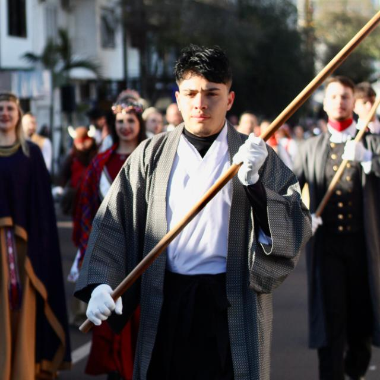

Ítalo Marques
Dança e taikô
Integrante desde 2025
Ano de nascimento: 2007
No Aika desde 2025, é o 12º integrante em ordem de chegada e faz parte da terceira geração do grupo. Sempre se interessou pela cultura pop japonesa e conheceu o grupo por meio da namorada, Manoela Amaral; desde então, tem se envolvido cada vez mais com a cultura, principalmente com a música. Além de dançar e tocar taikô, está se dedicando a aprender o shinobue, com o objetivo de dividir a posição de primeiro flautista com Vitor Antunes. É ele também quem dá vida à cabeça do Kinryu, o nosso dragão dourado, feito artesanalmente por Julieta Hayashi, da ARCJ Sakura. Com uma resistência física que permite longas apresentações e desfiles, conduz o dragão de forma animada, enérgica e interativa com o público dos festivais. Em 2026, foi o protagonista da dança do Baile das Etnias da Expofest ao lado de Manoela, interpretando Hikoboshi numa apresentação que retratava a lenda do Tanabata. No palco, você o verá nas danças de eisa e yosakoi, como Dynamic Ryukyu e Temai no Sora, e no taikô em músicas de acompanhamento, como Tawara. E, claro, se vir o dragão dourado passeando pela sua cidade, é ele quem está controlando a cabeça.